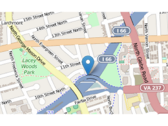

What Urban Planning questions can measuring Bike Trail Usage answer?
- Are bike trails currently being utilized?
- Will they be utilized more or less in the future?
Do we even need cars in Arlington County?
- (yes, depends, and absolutely)
Brian Frickert
Senior Data Over-Engineer
Do we even need cars in Arlington County?

My fabtabulous Bike Trail Forecaster not only shows you WHERE a county bike sensor is, it also shows each month's count of bicyclists on that trail! What's more: it looks deep into the FUTURE, forecasting how many bicyclists will use the trail in the months to come!!

Not exactly.
This is the average of percentage errors when evaluating the forecast with the 2015 sensor readings or Mean Absolute Percentage Errors (MAPE). For this trail, my forecast is off, on average, by almost 100%.
## [1] 98.45818
My suspicion is that the forecast will improve as more data is collected.
For more information you can contact.
gplushttp://plus.google.com
twitterhttp://twitter.com